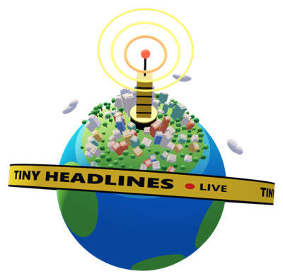

Tiny HeadlinesScience, tech, economy, the internet and games. Every story comes from a trusted outlet, credited on screen, and gets its own miniature world while the camera orbits it.
About 40 trusted sources — Nature, BBC News, The Guardian, The Verge, New Scientist and more.
Each headline becomes a diorama on a round plinth, assembled piece by piece on air.
The outlet is on screen, so you can read the original. Tragedies are never built with toys.
Vote in chat for the next story. YouTube and Twitch votes are counted together in one on-screen poll.
!vote 1-3Pick the next story.
+ / -Rate the story on screen.
!sourceShow where the story comes from.
!zoomTake a closer look.
Lobbies, waiting rooms, shop windows, offices: a calm, always-fresh news loop with no talking heads. Horizontal and vertical (9:16) feeds, 1080p, 24/7.